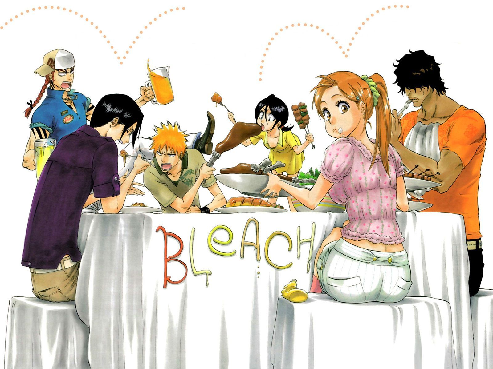
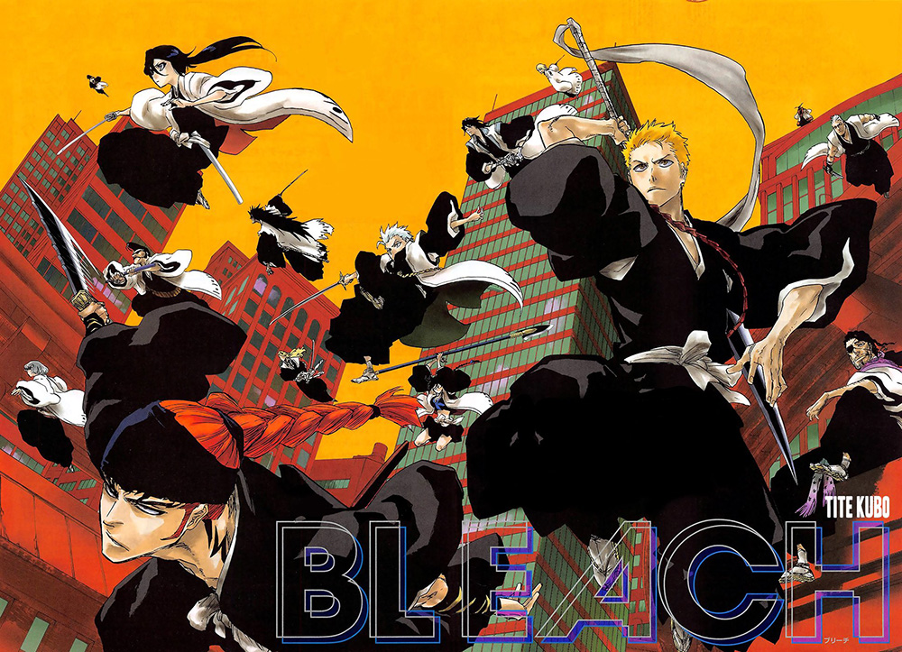
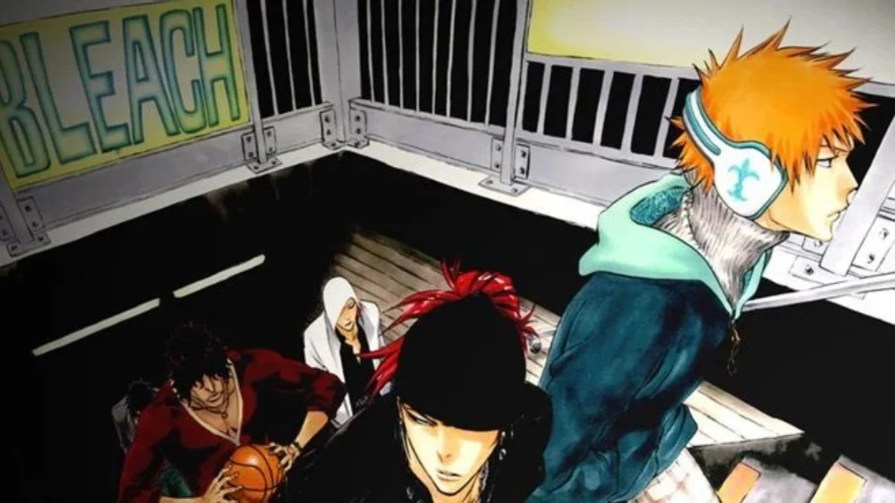
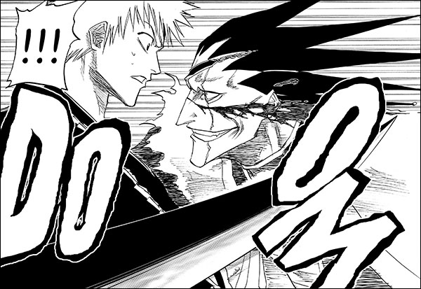
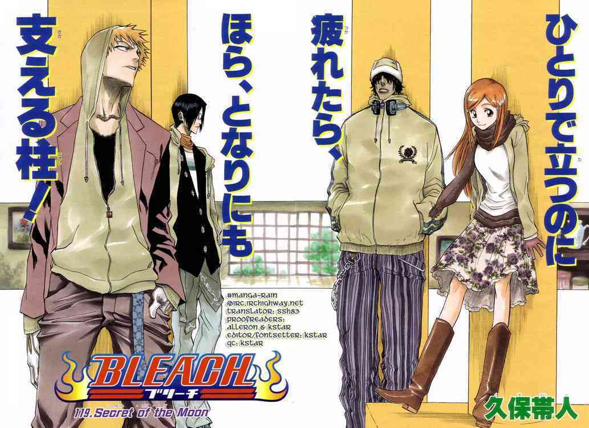
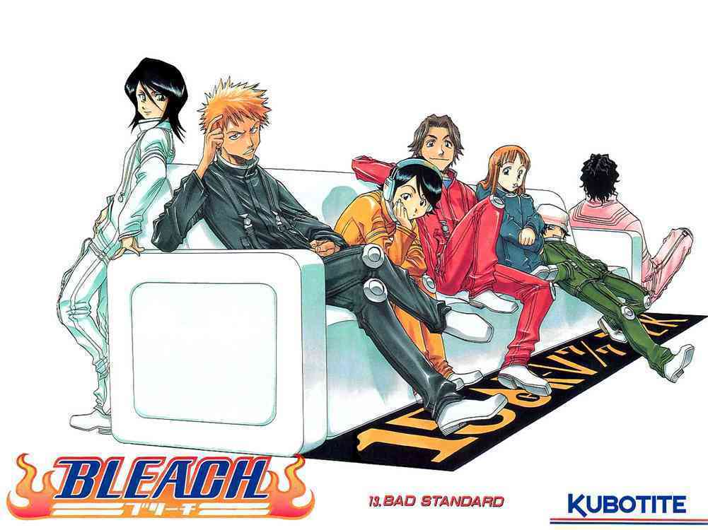
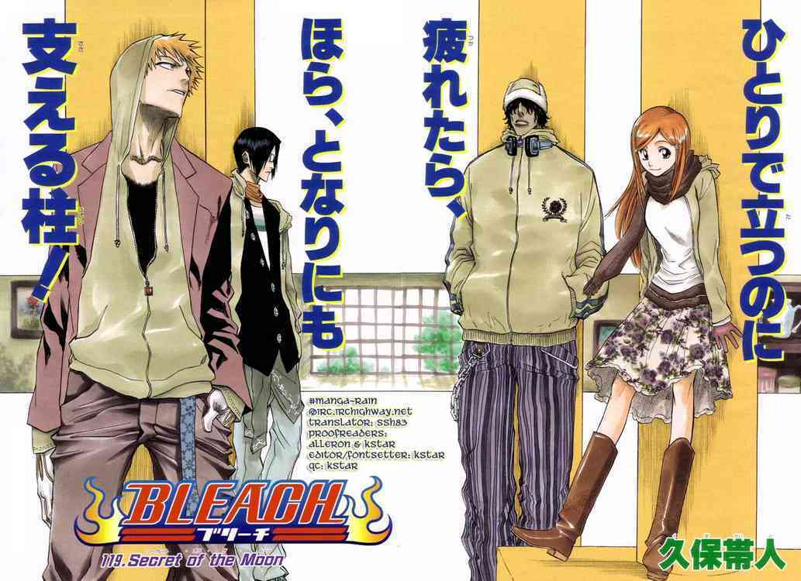
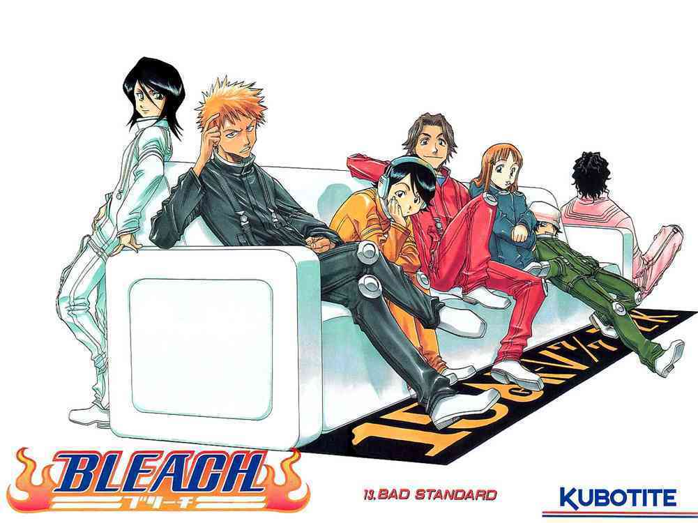

Bleach is the first manga I ever read. It is very close to my heart. Every cold day reminds me of the times i spent reading Bleach.
The mangaka Tite Kubo fell ill due to overwork. Due to this Bleach lost a lot of its actual spark in the later volumes of the series. Although it was a rough run in the end, I always hold it close to my heart. For me Bleach has the best character designs of all time.
Bleach (stylized as BLEACH) is a Japanese anime television series based on Tite Kubo's original manga series of the same name. It was produced by Studio Pierrot and directed by Noriyuki Abe. The series aired on TV Tokyo from October 2004 to March 2012, spanning 366 episodes. The story follows the adventures of Ichigo Kurosaki after he obtains the powers of a Soul Reaper—a death personification similar to the Grim Reaper—from another Soul Reaper, Rukia Kuchiki. His newfound powers force him to take on the duties of defending humans from evil spirits and guiding departed souls to the afterlife. In addition to adapting the manga series it is based on, the anime periodically includes original self-contained storylines and characters not found in the manga.
    


